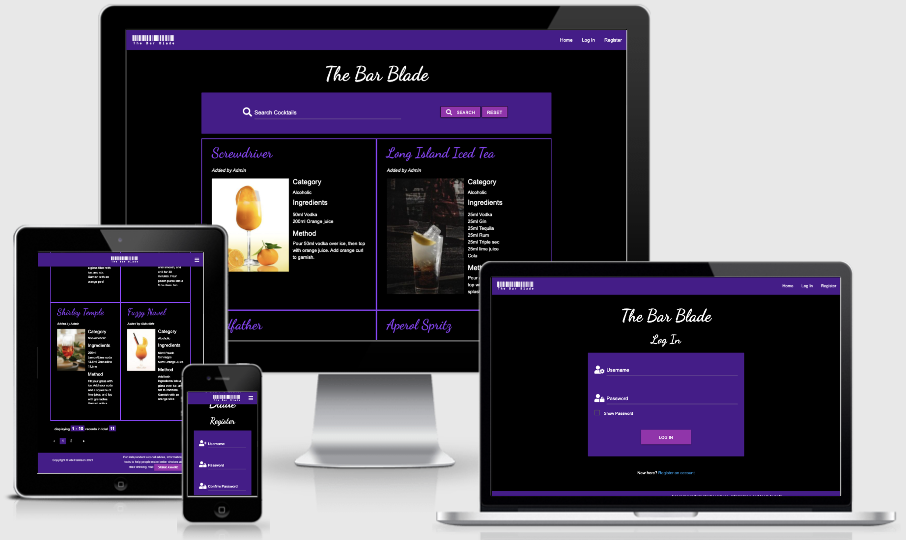
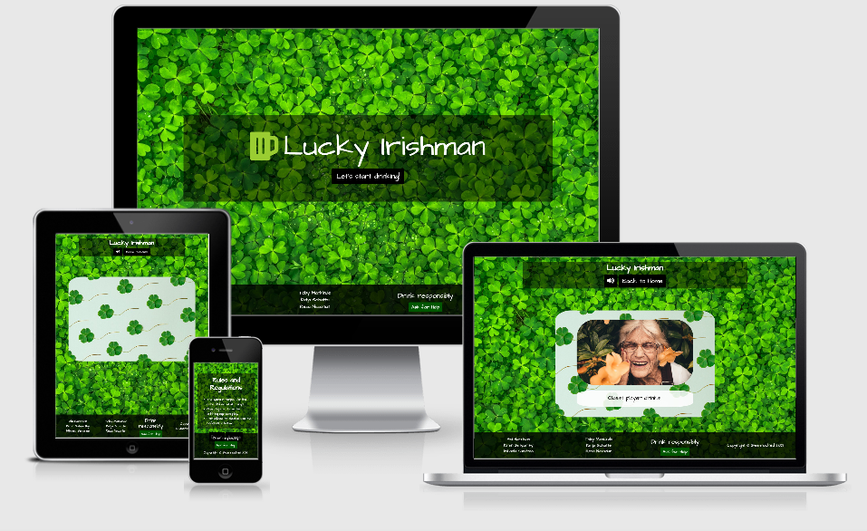
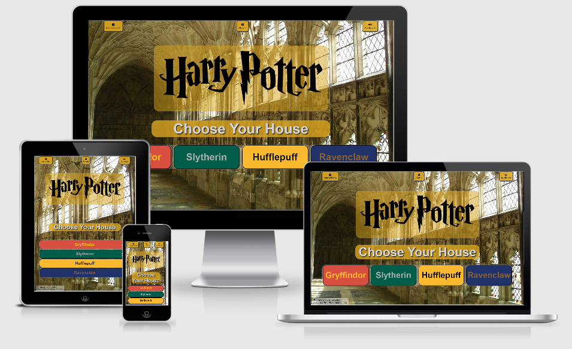
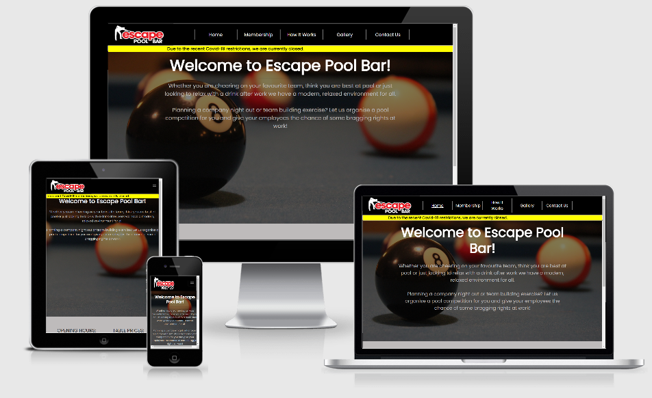

Abigail Harrison
Portfolio
The Bar Blade
Click here to view The Bar Blade Click here to view the GitHub repository for The Bar Blade This is a cocktail recipe site, made for bartenders, by bartenders. It's built using HTML, CSS, JavaScript, Python, Flask, Jinja, MaterializeCSS and MongoDB.
I chose to use MaterializeCSS framework for this project, as I hadn't used Materialize before and wanted to experiment with its use.
This was my first full-stack project, and it was really exciting getting to see users registering to the site and adding their own cocktails.
I used the Jinja templating language for this project so as to easily populate the data onto my site. I've had some experience using Hugo in the past, and this was very alike, so I enjoyed it.
LGBTQ+ History website
Click here to view LGBTQ+ History Click here to view the GitHub repository for LGBTQ+ History
This is an informative history site, themed around LGBTQ+ Pride. It was created by my team in the Code Institute June 2021 Hackathon, with the theme of 'Proud Coders' from 16th to 21st June.
We put a particular focus on styling, using the following:
- We used Bootstrap to enable us to create the base styling quickly and easily, as we were very limited on time.
- We chose not to use jQuery due to associated security issues and slow load times.
- We ensured that all images were sized correctly for the largest image size, then scaled down properly with responsive design.
- We created a basic JavaScript function to show or hide the information as the user wishes.
Harry Potter Sorting Hat
Click here to view the Sorting Hat Click here to view the GitHub repository for the Sorting Hat
This is a simple randomiser built on the theme of a Sorting Hat.
It is built with HTML, CSS and vanilla JavaScript, as it's a very basic project, make for my Girl Guide unit for a Harry Potter-themed sleepover.
I intend to add further functionality in the form of questions to decide which house the user is in, in the future.
Lucky Irishman
Click here to view Lucky Irishman Click here to view the GitHub repository for Lucky Irishman This is an interactive drinking game site, themed around St. Patrick's Day. It was created by my team in the Code Institute March 2021 Hackathon, with the theme of 'Hacking St. Patrick's Day' from 3rd to 8th March.
We put a particular focus on styling and interactivity, using the following:
- We used Bootstrap to enable us to create the base styling quickly and easily, as we were very limited on time.
- We chose not to use jQuery due to associated security issues and slow load times.
- We ensured that all images were sized correctly for the largest image size, then scaled down properly with responsive design.
- We created a flip animation for the cards, using a mix of CSS and JavaScript.
This was my first experience of coding as part of a team, and it was an incredibly rewarding experience.
Harry Potter quiz
Click here to view Harry Potter quiz Click here to view the GitHub repository for Harry Potter quiz This is an interactive Harry Potter themed quiz, built using HTML, CSS and JavaScript.
I chose not to use any libraries or frameworks for this project for several reasons:
- To showcase my coding and debugging skills, which I feel I didn't do as well as I could in the Esape Pool Bar website, due to using Bootstrap.
- Due to the performance trade-offs often caused by libraries and frameworks.
This was my first project built using JavaScript, and I really enjoyed the freedom and flexibility that JavaScript gave me.
Escape Pool Bar
Click here to view Escape Pool Bar Click here to view the GitHub repository for Escape Pool Bar This is a website for a local pool bar, using just HTML, CSS and Bootstrap.
This was built to showcase my skills at frontend basic UI / UX design, and working to a deadline.
This was the first full project I built whilst learning to code, and I learnt a lot about responsive design with this project.